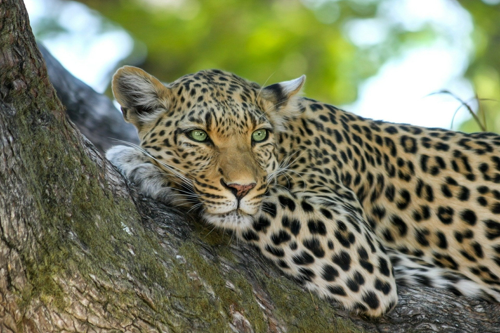

Yala National Park
Welcome to yala national park..
Yala National Park, situated in the southeastern part of Sri Lanka, stands as the country's second-largest and most renowned national park. Established in 1938, Yala spans approximately 979 square kilometers
Yala National Park is renowned for its significant population of the Sri Lankan leopard (Panthera pardus kotiya), which is the highest concentration of these majestic big cats in the world. Apart from leopards, the park shelters various other species of mammals, including elephants, sloth bears, sambar deer, and crocodiles. The park's extensive birdlife adds to its allure, with numerous endemic and migratory bird species, making it a paradise for birdwatchers.
View More

Visitor Information and Safaris
- Yala National Park offers both morning and evening safari options. Morning safaris typically start early to maximize wildlife sightings, while evening safaris provide a unique experience with different lighting conditions.
- Various safari packages are available, including options for half-day and full-day safaris. Visitors can choose between private jeeps or join group safaris led by experienced guides. It's recommended to book safari packages in advance, especially during peak seasons.
- Respect the wildlife and maintain a safe distance from animals.
- To book your safari at Yala National Park, you can visit the official website
- Be patient and enjoy the serenity of the park while observing wildlife.
Photo gallery
